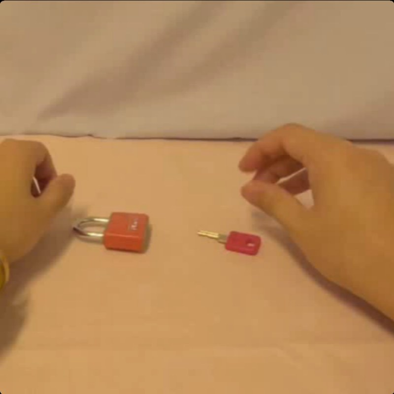
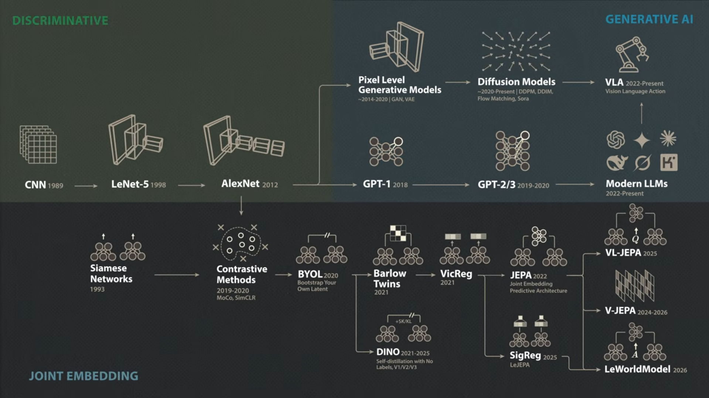
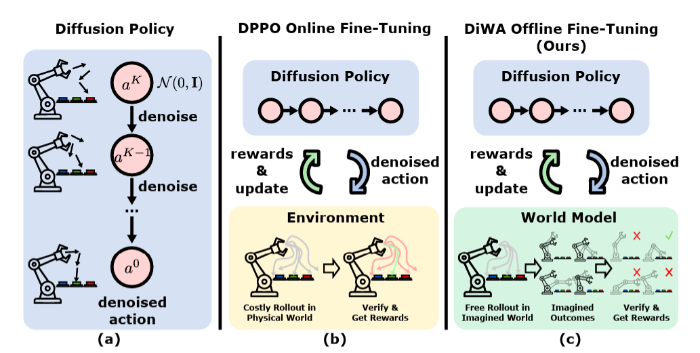

MSc Artificial Intelligence dissertation
Learning to Select Actions for Complex Hand Tasks
A comparative study of visuomotor policies and latent world models
A comparative study of visuomotor policies and latent world models
Graham Pellegrini
Supervised by Prof. Alexiei Dingli
Department of Artificial Intelligence, Faculty of ICT, University of Malta
A policy is a model that learns from demonstrations (human, robot or simulated) to turn the current scene into a chunk of future actions.

A VLA maps the scene straight to an action, without predicting its consequences. A world model predicts those consequences first.

Screenshot from Welch Labs, Yann LeCun's $1B Bet Against LLMs (2026). Highlights added.

Left: Chandra et al. (2025), evaluated on CALVIN. This study reproduces (c). Right: illustrative frames.
Can a frozen world model, used to select among a policy's sampled candidates, reduce error compared with a single policy query?
Tested offline, with the world model acting only as the final decision stage over candidates the policy already proposed.
How much does it help, and for which policy and world-model pairings?
When does selection fail, and why?
How does selecting compare with finetuning the policy inside a world model (DiWA on CALVIN)?
18 numbers per step
Per wrist: 3 position + 6 orientation (6-D rotation encoding)
12 DoF in total, 6 per wrist. Poses come from the headset's hand tracking.
Diffusion Policy denoises Gaussian noise into a motion over DDIM steps. 5 independent noise samples give 5 candidates.
ACT is a CVAE, where a latent z sampled at test time should vary the motion. Posterior collapse means the decoder learned to ignore z, so all 5 samples are the same motion.
Cross-entropy method, started from the policy's output (inspired by TD-MPC2).
The same world model builds the pool and then picks from it, so the pool already leans towards what that world model prefers.
ACT results therefore measure the world model and the planner as one unit.
Only seed 42 needed CEMP, so seeds 43 and 44 were scored on ACT's own candidates. The pooled ACT result therefore mixes a world-model-plus-planner measurement with a plain scorer measurement. Read it as one result for this rule, not as a clean measurement of the scorer. This is why Diffusion Policy carries the main claim.
| Model | What it is | Gain | What it showed |
|---|---|---|---|
| V-JEPA2-AC | Frozen video-pretrained encoder, our action head | -5.98% | Validated: its score tracks the true error |
| DexWM | Frozen DINOv2 encoder, second predictor and a hand-consistency head | +0.57% | No gain, single seed |
| LeWM | Small, compact, trained end to end, no pretrained encoder | -10.1% | Big gain, but its scores did not track the true error, so the gain is not from its predictions |
| V-JEPA2, no action | Control: same model, action input set to zero | 0.00% | Every score ties: the motion is what matters |
| PointWorld proxy | Weakened motion input | +0.27% | No gain |
| DINO-WM, JEPA-WM | Official robot checkpoints, smoke-tested only | latent only | Interface mismatch: 18-D hand motion squeezed into 7-D robot actions |
Translation error change, Diffusion Policy, Branch 2, matched training exposure. ACT with CEMP gave -0.58%, read as one unit (slides 12 to 14). LeWM detail: Backups B and C.
The gain comes from reading each candidate's motion, not from the video backbone. Pooled across three seeds, 95% CI [5.43, 6.47], no retraining. Rotation error -0.96°. Win / tie / loss 49.9 / 23.2 / 27.0%. Branch 3: 5.37% of a 14.68% ceiling. The ceiling is what a perfect selector could remove from the same five candidates.
Task success rate (%), CALVIN. Selection (C2) is within noise of the policy alone (C1) on every task; finetuning (C3b) adds 14 to 40 points.
Finetuning improves the policy. Selection improves the choice.
Graham Pellegrini
graham.pellegrini@um.edu.mt
Almost the same gain, and only the rollout scorer uses LeWM's learned dynamics. So the gain comes from how typical the motion is, not from prediction.
Spearman rank correlation: how well the world model's ranking of the candidates matches their true ranking. Gain says how much error drops; correlation says whether the ranking is right.
V-JEPA2-AC: per window, candidate scores against candidate errors (K = 5, pooled seeds). LeWM: across windows, score margin against true improvement (+0.54 on a 512-window check, -0.51 on all 7,607). The no-action control ties every score.
| Seed 42 | Seed 43 | Seed 44 | |
|---|---|---|---|
| Baseline translation error | 0.1142 | 0.1178 | 0.1191 |
| V-JEPA2-AC, Branch 2 | -6.41% | -6.09% | -5.46% |
| V-JEPA2 without action input | 0.00% | 0.00% | 0.00% |
| PointWorld proxy | +0.50% | +0.23% | +0.07% |
| LeWM rollout (unvalidated) | -10.10% | -10.06% | -10.12% |
Three seeds are a basic robustness check, not proof of stability. DexWM is single-seed by a cost decision of roughly 121 extra GPU-hours.
Seed 42, Branch 2, nested pools. More candidates raise the ceiling, but they come from the same policy and capture stays about flat, so the scorer, not K, limits the gain.
Windows sorted by baseline error, K = 8, Branch 2. Translation error rises 5.81% in Q1. Confidence gating does not help, because the score gap has a correlation of -0.002 with baseline error. A state-change-targeted windowing removes most of the reversal.
Translation error = average, over the 16 steps and both wrists, of the root-mean-square position error per axis (metres)
Gain = mean error of the chosen candidate ÷ mean error of candidate 0, minus 1
Rotation error is the same idea for orientation: the mean geodesic angle in degrees. Error is always measured against the recorded human motion, which the world model never sees.
| Obj. | Status | Basis |
|---|---|---|
| 1 | Fully | Three-branch benchmark implemented as designed and used for every family reported |
| 2 | Partly | Local exposure matched, externally pretrained backbones carry an advantage not equalised |
| 3 | Within tested configurations | Whether and when selection helps determined for every combination, one positive, a likely explanation for each other |
Objectives 4 and 5 are in the Conclusion chapter's objective table. Every non-positive-route explanation is the study's own interpretation, not independently proven.
Success rate (%), CALVIN, three seeds, the authors' released checkpoints. Within 5 points on every task; base policy within 7 (Q&A 3). The behaviour-cloning weight was set to the paper's values after a run at zero collapsed two tasks.
Seed 42, 7,607 windows, ranked by true translation error. Candidate 0 is spread evenly, like a random pick. The world model finds the best candidate about 1.8 times as often as chance.